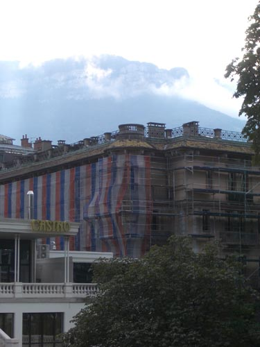

| Aix-les-Bains | ||
|
 Aix-les-Bains has its history - its casino - its spa - but none of that seemed very interesting on a grey September afternoon the Radisson is handy - just up from the station - there's a little cinema across the road - i can't give much advice about eating - we never found anything to our satisfaction - Gertrude and Alice were well pleased with the food of the region - but that was then - and they had a car this car theme raised its head every so often - i had taken Wars I Have Seen to read on the trip - and in there were tales of cars running on charcoal - German officers compelled to take taxis - Gertrude celebrating her return to the train - yet somehow this car theme is sluggish - dull and mechanical we know that today the roads are choked - roaring - humming - where once they were sprinkled with hand carts - walkers - and occasional meetings - that world stretches back into the roots of European time - and lurks too somewhere in the future - perhaps - we know that in all probability there will be a dwindling - a reverting - an ebbing of this sleek era of encapsulated independent travel it's important - yes - but it's dull to think how everything changes when you have or don't have a car - why dull - well i don't know how to explain it - but it is - let's forget it but of course we couldn't - the car rules - at the tourist office in Aix-les-Bains they looked oddly at us asking how to get to Belley by bus trains are easy - train stations are obvious - the nineteenth century never hid them - once at the station you can visit every pearl on the necklace - to get to Culoz from Aix-les-Bains would be easy - even though chronologically it came second - we did it first buses are more elusive - it took a journey to Chambéry to track down the gare routière - it's in Avenue de la Boisse - next to the train station - and work out that there's a bus each morning for Belley - returning in the early evening - we wouldn't need to stay in Belley after all |
||